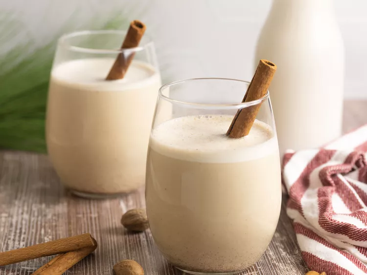

Odin Recipes
Coquito

Coquito is a traditional holiday drink that originated in Puerto Rico. In Spanish, coquito means "little coconut." The beverage is coconut-based and spiked with rum. Rich and creamy coquito, which is often thickened with egg yolks, is similar to eggnog. In fact, sometimes it's referred to as "Puerto Rican eggnog."
Ingredients
These are the ingredients you'll need to make a decadent batch of coquito:
- Evaporated milk: This coquito recipe starts with a can of evaporated milk.
- Eggs: Two beaten egg yolks contribute to the rich, thick, and creamy texture.
- Cream of coconut: Canned cream of coconut lends richness and gives the coquito its signature coconut flavor.
- Sweetened condensed milk: Sweetened condensed milk makes everything more delicious, including this coquito recipe!
- White rum: The best rum for coquito is white Puerto Rican rum, such as Bacardi. In a pinch, any pleasant-tasting white rum will do.
- Water: Water thins the thick and creamy mixture, making it super pourable.
- Vanilla: A teaspoon of vanilla extract takes the flavor up a notch.
- Spices: Cinnamon and cloves add warmth and coziness.
Steps
You'll find the full, step-by-step recipe below — but here's a brief overview of what you can expect when you make this crowd-pleasing coquito:
- Cook the evaporated milk and egg yolks in a double boiler until thick.
- Transfer the mixture to a blender and blend with the remaining ingredients.
- Transfer to glass bottles and refrigerator until cold.
Click here to go up